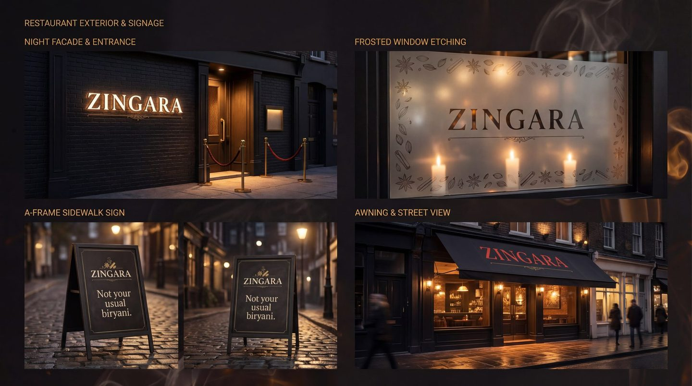
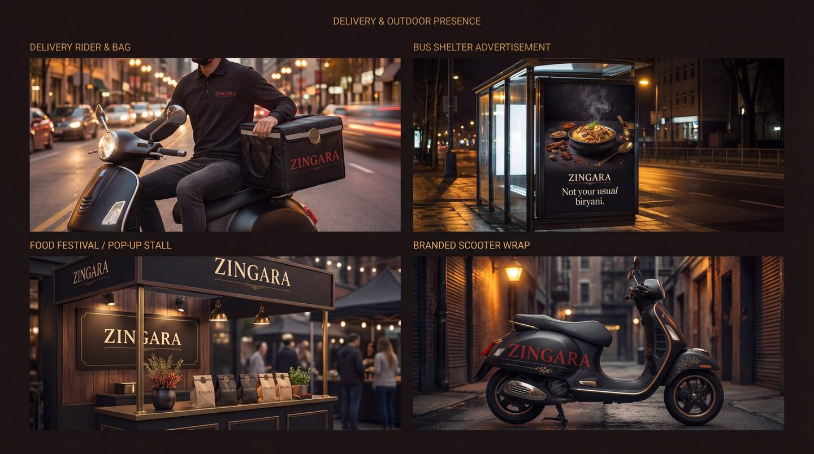
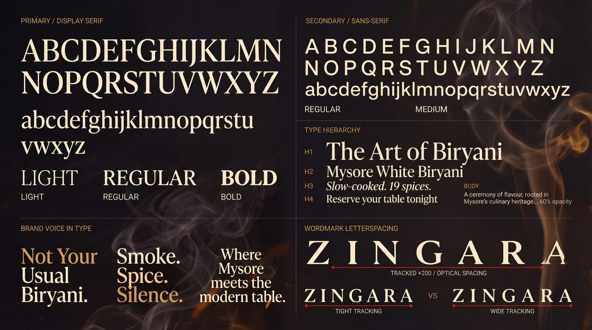

Case 01 · Restaurant · Bangalore
It read like three restaurants.
One system, from the sign to the delivery bag. Every dish stayed.
The problem
The menu was costing them.
- 189
- Items on the menu
- 4
- Typefaces in it
- 3
- Restaurants, in the listings
The whole of it
Our first client, won on a cold call. The food was better than the room suggested, and far better than the menu.
The menu was costing them. 189 items set in four typefaces, prices that wandered down the page, and delivery listings that looked like three different restaurants.
But the menu was only where it showed. There was no system behind any of it — no fixed mark, no colour that meant anything, no rule about what the place should look like on a sign, on a box, or on a phone at eleven at night. Every new thing was a new decision, and every new decision drifted.
Diners were spending their attention finding dishes instead of wanting them. Nothing was wrong with the kitchen. Everything was wrong with the page in front of it.
01 · The system
Decide it once.
A brand is not a logo, it is a set of decisions you never have to make again. These are Zingara's, written down so that the next menu, the next box and the next hire all land in the same place.
-
True Red
#C8332AThe accent, and the only one. Five tints and shades are specified under it. -
Charcoal
#1C1A18The ground almost everything sits on. Not black — black would have gone cold. -
Cream
#F5EDD8The reading colour. Every long piece of text on the system is set in it. -
Burnished Gold
#C9933ARules, seals and ornament. Never the thing itself, always the frame around it.
Values as specified on the Zingara colour board. Where a second board quotes a slightly different red, the colour system board is the one we hold to.
- Usage ratio
- 60 / 20 / 10 / 10Charcoal, true red, cream, burnished gold. Fixed, so no one has to argue about it again.
- Primary typeface
- Cormorant GaramondLight, regular, semibold and bold. High-contrast bracketed serifs, for warmth and heritage.
- Secondary typeface
- DM SansRegular, medium and bold. Geometric clarity for anything functional.
- Wordmark tracking
- +200Optically spaced, not just tracked. Set against the tight and wide versions that were rejected.
- Clear space
- Height of the ZOn every side. It is the one rule people actually remember.
- Minimum size
- 50 · 30 · 15Millimetres. Large, medium, and the smallest the wordmark is allowed to be set.
19 spices. Built, not coated.
No colour. Just flavour.
Smoke. Spice. Silence.


02 · The fix
The menu, re-set.
The system had to prove itself somewhere, and the menu was where it hurt. Drag the line. The prices find one column, the four faces become one, and the shouting stops. Nothing is removed — it is the same menu, read differently.
- Charred Corn Lime Butter Charred corn Rs.249/- Lime butter, chilli salt
- Burrata Smoked Tomato Burrata Rs.420/- Smoked tomato, basil oil
- Pepper Prawns Curry Leaf Pepper prawns Rs.460/- Curry leaf, coconut
- Mushroom On Toast Mushroom on toast Rs.310/- Thyme, aged cheese
- Ghee Roast Chicken Ghee roast chicken Rs.540/- Mangalore spice, appam
- Lamb Shoulder Mint Lamb shoulder Rs.720/- Mint, slow fire
- Mysore White Biryani Mysore white biryani Rs.480/- Nineteen spices. No colour.
Read it top to bottom.Nothing shouts.
Reconstruction · the original menu is not ours to publish, and the dishes shown are indicative · what is real is the problem: 189 items, four typefaces, prices that wandered
03 · It travels
A menu is not a document.
It is a system that has to survive a sign in the rain, a box on the back of a scooter and a phone screen at arm's length. This is the same decision, kept, on every surface the restaurant actually owns.





04 · On a screen
Where the orders are.
Dine-in is the room. Everything else is a phone. The site, the order flow, the social grid and the marketplace listings were treated as one surface, because to a diner scrolling at eleven at night that is exactly what they are.


One brand, four places
- Dish names identical across the menu, the site, Swiggy and Zomato
- Petpooja item names rewritten to match, so the kitchen ticket reads like the menu
- One photographic look: one light, one background
- The same Z avatar on every profile
What we stopped doing
- A different hero image per platform
- Discount badges burnt into the photography
- Three spellings of the same biryani
- Listings written by whoever onboarded them
Live
zingararestaurant.co.inThe site as it runs today. The listings on Swiggy and Zomato carry the same names and the same photography.
05 · It extends
The real test.
Any system looks coherent while it only has to describe one thing. The test is what happens when the client opens something else.


The numbers
What it did.
A beautiful brand that does not sell is decoration.
Scope
- Brand audit
- Identity & wordmark
- Type and colour system
- Brand icon set
- Menu system · 189 items
- Eight-pattern texture library
- Print & stationery
- Packaging & delivery livery
- Signage & interior graphics
- Website & order flow
- Swiggy & Zomato listings
- Petpooja item names
- Reels & social
- Amma's Breakfast sub-brand
- Guidelines people use